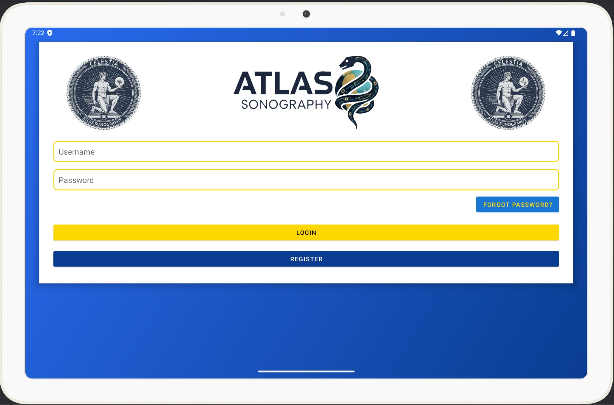
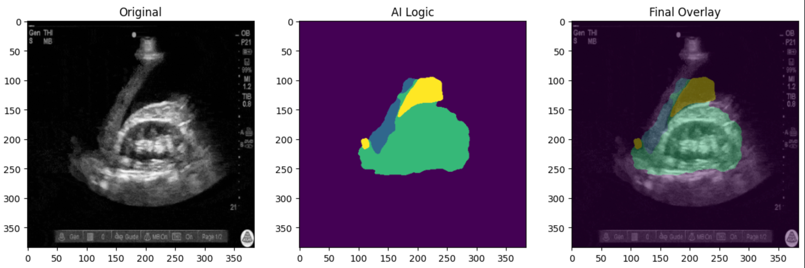

Celestia: An Ultrasound AI Analysis Tool
Atlas Sonography is committed to delivering accurate, reliable AI analysis on ultrasound images for use in extreme environment.
Meet The Team
About Celestia

Celestia is an Android-based AI analysis app designed to provide accurate organ identification and anomaly detection in ultrasound images. With a 95% confidence level, Celestia aims to assist healthcare professionals in making informed decisions, particularly in extreme environments where access to traditional diagnostic tools may be limited.

Our AI model is trained on a diverse dataset of ultrasound images, enabling it to recognize various organs and detect anomalies with high precision. Celestia's user-friendly interface allows for easy navigation and quick analysis, making it an essential tool for medical professionals in the field.